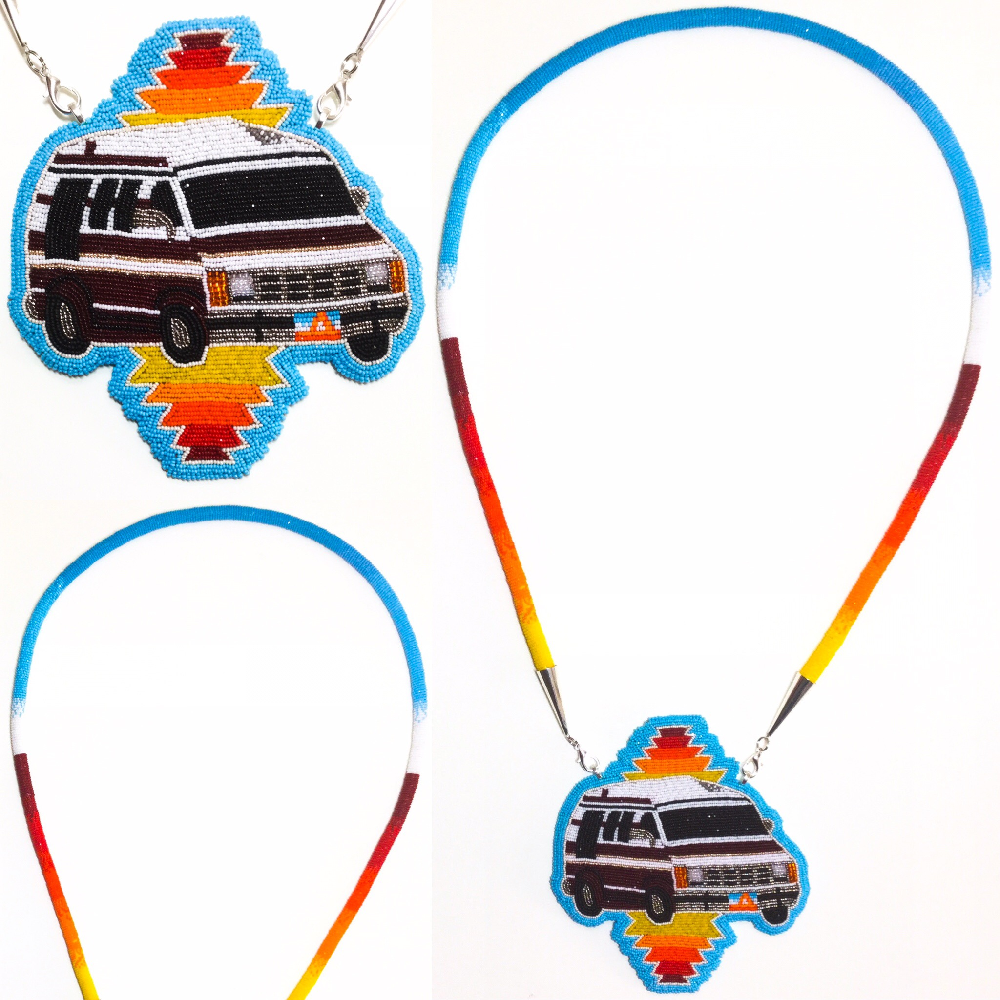
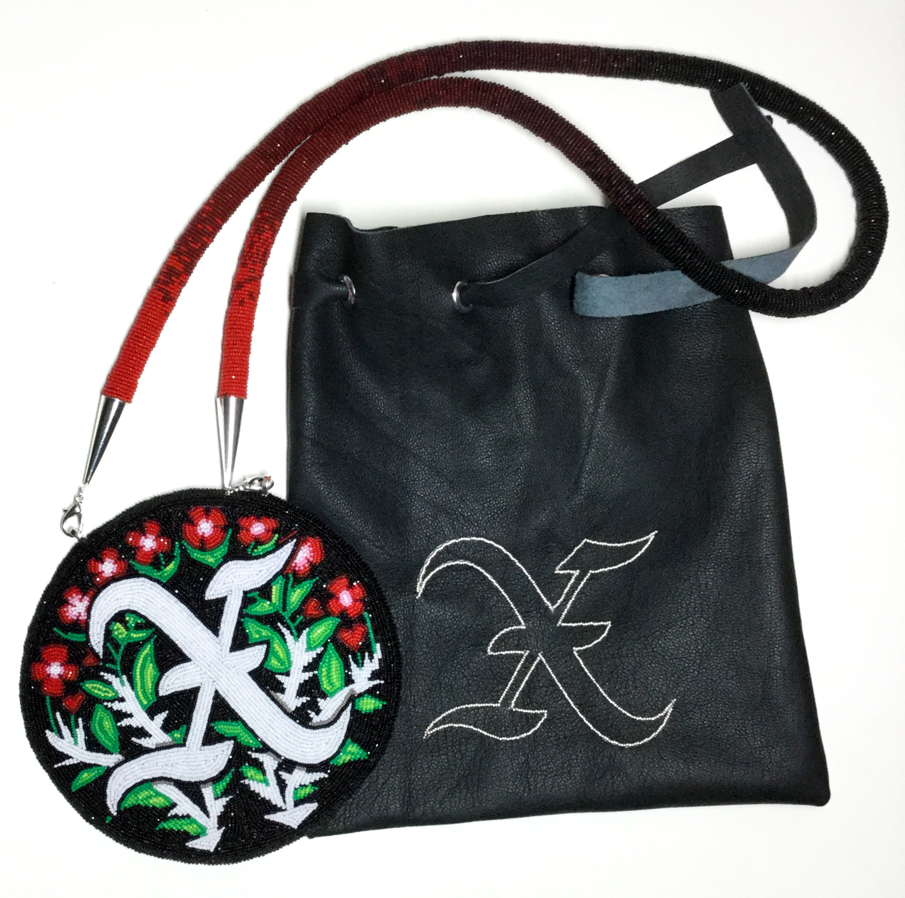
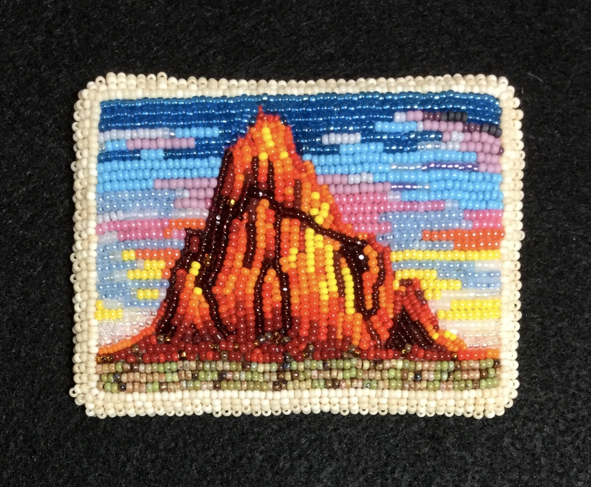
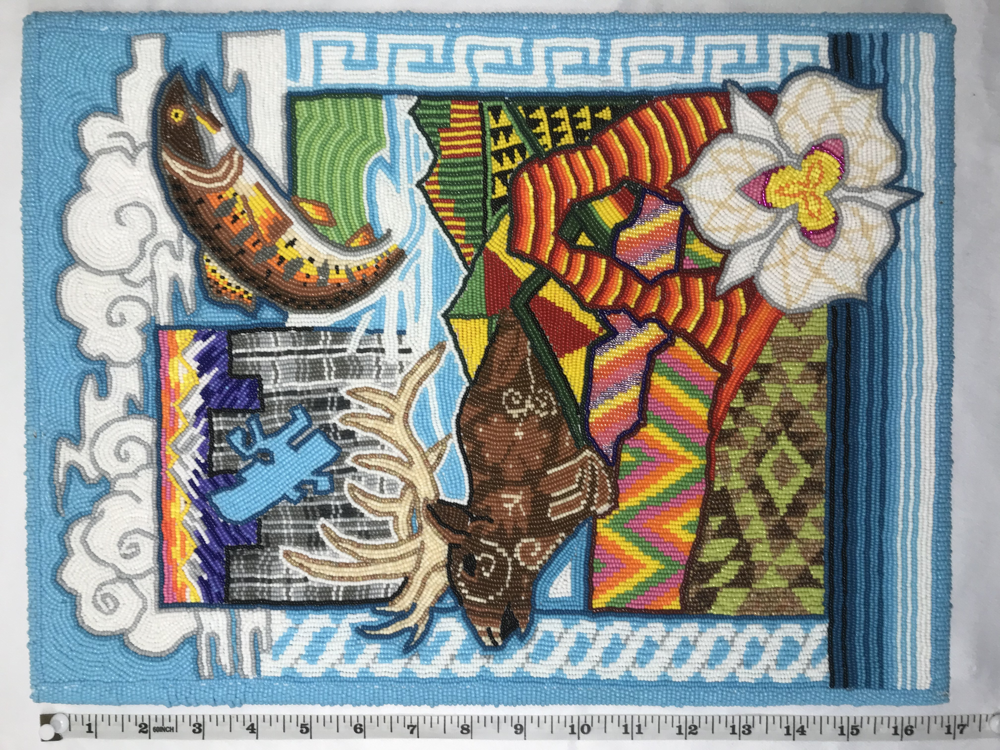
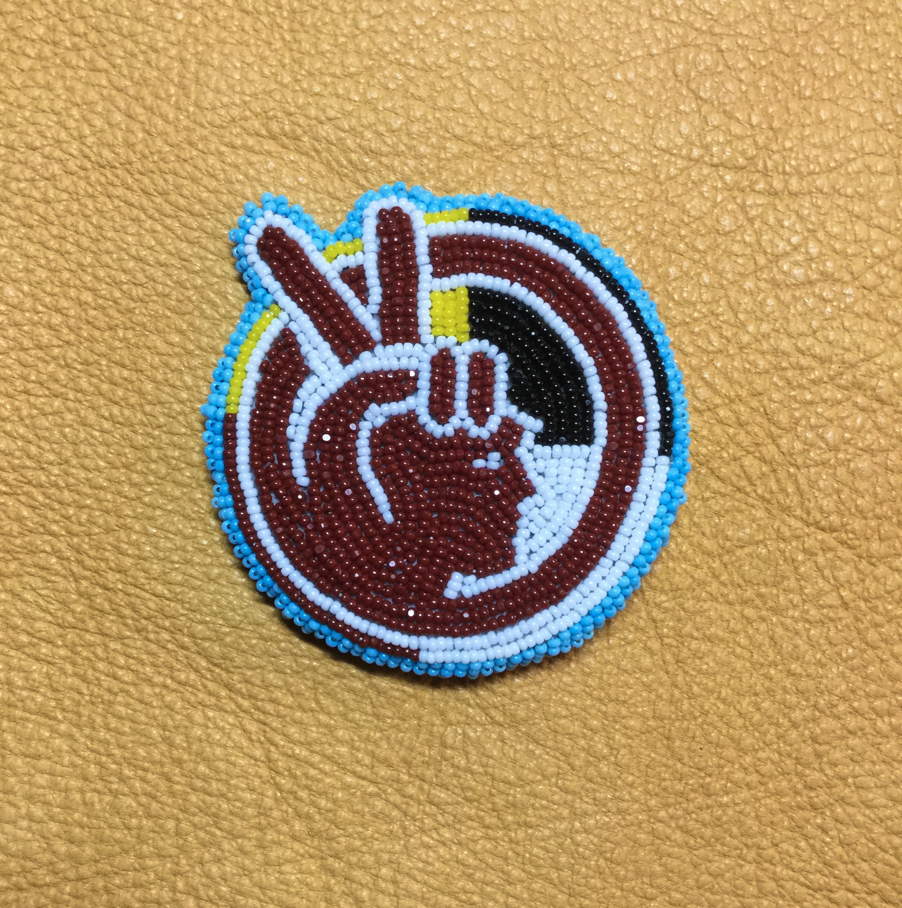
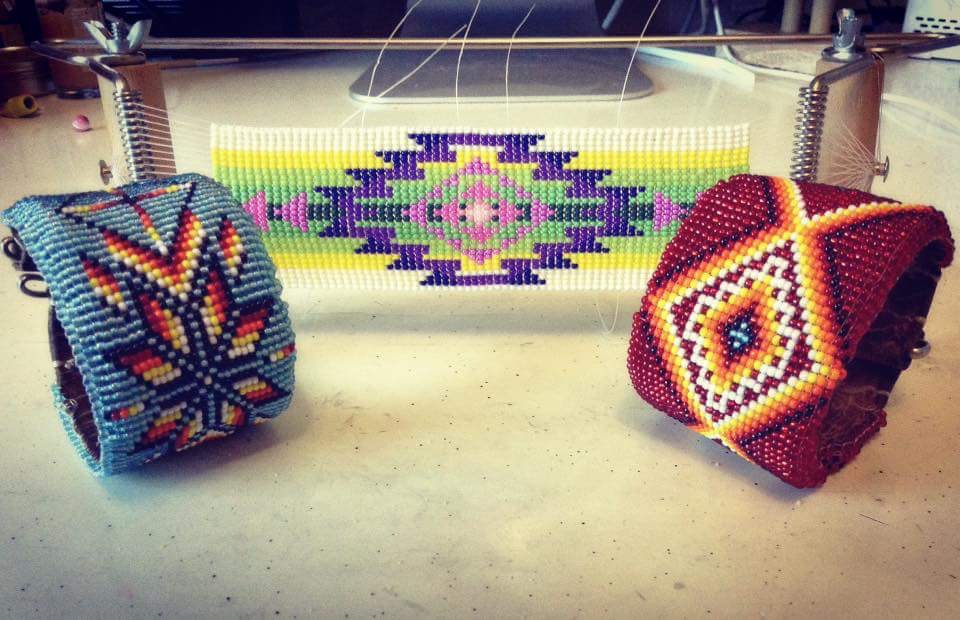
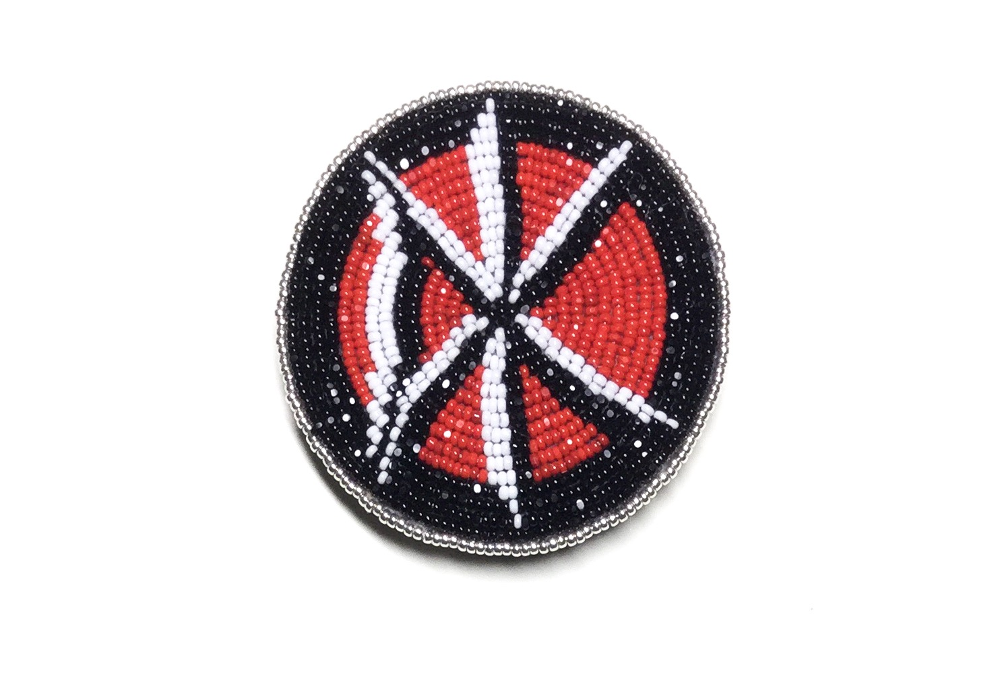
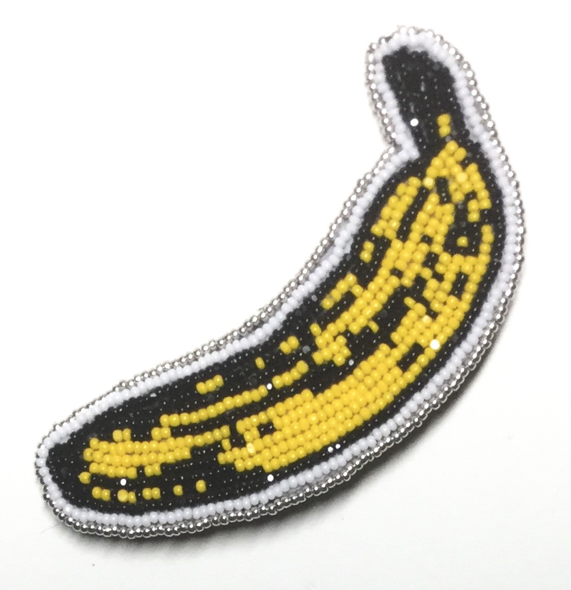

Vanimal Medallion
Seed beads, 6" x 6", 2018

X Medallion With Custom Leather Bag
Seed beads and leather, 6" x 6", 2019

Greetings From Shiprock
Seed beads, 3.5" x 2.5", 2019

Greetings From San Francisco
Seed beads, 3.5" x 2.5", 2019

Indigenous Dissonance - cuff and earring set
Seed beads, 2019

DiasporUtah
Seed beads, 14" x 17", 2019

A.I.M.
Seed beads, 2" x 2", 2018

Various Cuffs
Seed beads, 2018

Dead Kennedys Brooch
Seed beads, 2" x 2", 2019

Velvet Underground Beaded Brooch
Seed beads, 1" x 2", 2018